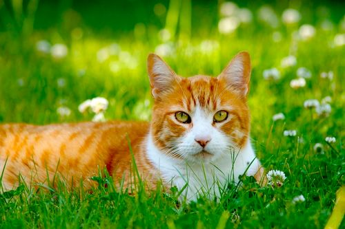

여러 종이 있다. 러시안블루, 먼치킨, 치즈냥이등이 있다. 고양이는 다른 동물들보다 눈과 동공이 매우 크다. 그리고 세로 동공, 즉 '고양이 눈'은 해가 쨍쨍하게 비치는 밝은 장소로만 한정되며 집 안의 밝기 정도에서 크고 예쁜 눈을 유지한다. 눈꼬리가 위로 향해있어 요염한 느낌을 주기도 한다.[17] 고양이의 두개골에는 포유류 중에서 체구 대비 가장 큰 안와(안구가 들어가는 구멍)가 있다. 눈만 큰 것이 아니라 상당히 조그마한 코[18], 남녀 불문하고 뿅가죽게 만드는 부위인 발바닥 젤리도 있다. 평균 머리길이 5cm, 그리고 평균 몸길이 60cm라는 비범함은 덤. 무게는 소형은 3kg 미만, 중형은 3~5kg 정도이며, 대형은 5kg 이상이다.
같은 체구의 개와 육식동물로서의 비교를 하자면 대체로 개보다 이빨로 무는 힘은 약하지만[19] 날카로운 발톱이 더 위협적이다. 사냥을 할 때도 발톱을 우선적으로 사용하여 제압한 후 물어서 운반하는 편이다.